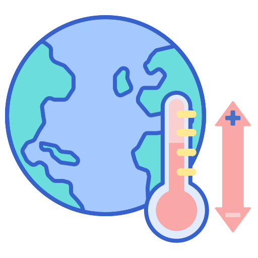

 el agua
1/12/2021
El cambio climatico es uno sino que el problema mas grande del siglo ya que esta acabando con el mundo y todo esto es provocado por nosotros. Muy poca gente entiende que esto nos esta llevando a acabar con el planeta, pero el primer paso para detener el cambio climatico es hacer conciencia de lo que esta pasando.
el agua es fundamental para vivir
el agua es fundamental porque es lo que nos da energia para que no te desmayes